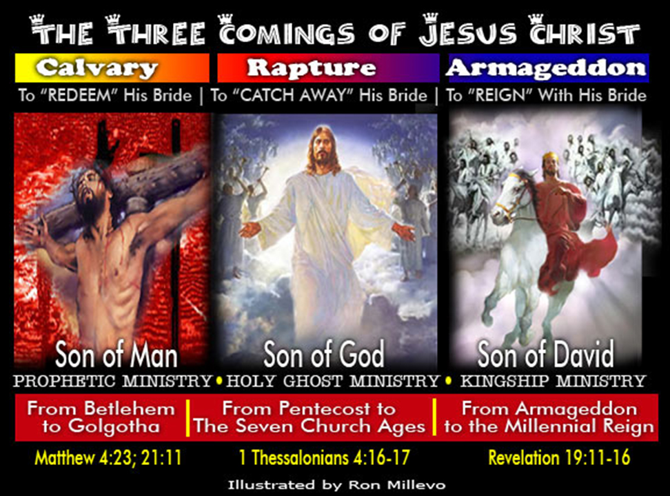

The RAPTURE of the church refers to that time when a trumpet will sound,
and our Lord Jesus Christ will descend from heaven with a shout and with the
voice of the archangel, and we believers who are alive at that time will rise
to meet our Lord in the air, while our mortal bodies are being changed from
corruptible into glorified immortal bodies.
This is a literal future event as prophesied in the succeeding Scriptures:
I THESSALONIANS 4:16-18:
“For the Lord himself shall descend from heaven with a shout, with the voice of the
archangel, and with the trump of God: and the dead in Christ shall rise first: Then
we which are alive [and] remain shall be caught up together with them in the clouds,
to meet the Lord in the air: and so shall we ever be with the Lord. Wherefore comfort
one another with these words.”
Also in I CORINTHIANS 15:51-54:
“Behold, I shew you a mystery; We shall not all sleep, but we shall all be changed,
in a moment, in the twinkling of an eye, at the last trump: for the trumpet shall
sound, and the dead shall be raised incorruptible, and we shall be changed. For this
corruptible must put on incorruption, and this mortal [must] put on immortality.
So when this corruptible shall have put on incorruption, and this mortal
shall have put on immortality, then shall be brought to pass the saying
that is written, Death is swallowed up in victory.”
Yet only those who are prepared and are predestinated of God to go in the rapture
are the ones that will know of the exact time and actual day of this event,
for it will be a “secret” catching away of the Bride of Jesus Christ. This
event will take place just before the coming of the Great Tribulation
(sixth seal) and right before the Anti-Christ system takes control over
all the whole world’s religious and political systems.
I THESSALONIANS 5:1-11:
“But of the times and the seasons, brethren, ye have no need that I write unto you. For yourselves know perfectly that the day of the Lord so cometh as a thief in the night. For when they shall say, Peace and safety; then sudden destruction cometh upon them, as travail upon a woman with child; and they shall not escape. But ye, brethren, are not in darkness, that that day should overtake you as a thief. Ye are all the children of light, and the children of the day: we are not of the night, nor of darkness. Therefore let us not sleep, as [do] others; but let us watch and be sober. For they that sleep sleep in the night; and they that be drunken are drunken in the night. But let us, who are of the day, be sober, putting on the breastplate of faith and love; and for an helmet, the hope of salvation. For God hath not appointed us to wrath, but to obtain salvation by our Lord Jesus Christ, who died for us, that, whether we wake or sleep, we should live together with him. Wherefore comfort yourselves together, and edify one another, even as also ye do.”Jesus Christ comes to earth three times. He also comes in three Son’s names namely, (1) as “Son of Man” (Prophetic Dispensation to Israel), as (2) “Son of God” (Holy Spirit Dispensation to the 7 Church Ages), and as “Son of David” (during the 1000 years of His Millennial Reign). See photo below.

The purpose of Christ's FIRST COMING was to “REDEEM” His Bride by the shedding of His
blood at the Cross of Calvary.
Revelation 5:9-10 states – “And they sung a new song, saying, Thou art worthy
to take the book, and to open the seals thereof: for thou wast slain, and hast redeemed
us to God by thy blood out of every kindred, and tongue, and people, and nation; and
hast made us unto our God kings and priests: and we shall reign on the earth.”
The SECOND COMING will be the Literal RAPTURE of the Church. it is the “CATCHING AWAY”
of Jesus' Bride which literally comes out of the Seven Church Ages just before
the Tribulation Period strikes the earth (1 Thessalonians 4:16-18).
End Time Message believers do not believe that the Bride of Christ will go through
the Tribulation Period. The Bride will leave this earth before the thing takes place.
The Bride is forgiven, justified, sanctified and is baptized with the Holy Ghost. Jesus
Christ already died for her, and her tribulation has already been paid by Jesus Himself
at the cross of Calvary. Jesus gave His life in exchange for His Bride. As we are “bones of
His bones, and flesh of His flesh”, the Bride therefore, we will no longer go through the
Tribulation Period because she has already gone through the sanctification process through
the sacrificial Body of our Lord Jesus Christ. “Jesus was made sin in order for her to be
made righteous”. The Bride types the Wise Virgins of Matthew 25 who made it to the Wedding
Supper because they had "oil" in their lamps. "Oil" signifies the "Baptism of the Holy Spirit"
through the revelation of the Word.
The Foolish Virgins are the ones who will go through the Tribulation Period
to die for their faith for they will be left behind. The Foolish Virgins
are those Christians who have failed to receive the “OIL” or “Baptism of
the Holy Spirit” in these last days because they have rejected this End
Time Message. They remained in their denominational creeds and dogmas until
one day they will realize that denominationalism is the "Image of the Beast".
Once they realized such a tragic thing, they will start looking for the "oil"
but it will be too late. The rapture must have been past during such time and
the door closed. They were left behind "weeping, wailing, and gnashing their teeth".
Being therefore left behind, the AntiChrist will devour them and persecute them
for their faith. Nowhere to hide, they will be purged and tortured unto death
unless they deny their testimonies as Christians and receive the "mark" in their
hand and in their forehead. These events will all transpire during the Tribulation
Period, while Israel's 144,000 elect is also being called out by Moses and Elijah
from Judaism into the true Gospel of Jesus Christ.
Matthew 25:1-13 speaks very well of this event:
“Then shall the kingdom of heaven be likened unto ten virgins, which took their lamps,
and went forth to meet the bridegroom. And five of them were wise, and five [were]
foolish. They that [were] foolish took their lamps, and took no oil with them: But
the wise took oil in their vessels with their lamps. While the bridegroom tarried,
they all slumbered and slept. And at midnight there was a cry made, Behold,
the bridegroom cometh; go ye out to meet him. Then all those virgins arose,
and trimmed their lamps. And the foolish said unto the wise, Give us of your oil;
for our lamps are gone out. But the wise answered, saying, [Not so]; lest
there be not enough for us and you: but go ye rather to them that sell, and
buy for yourselves. And while they went to buy, the bridegroom came; and they
that were ready went in with him to the marriage: and the door was shut. Afterward
came also the other virgins, saying, Lord, Lord, open to us. But he answered and
said, Verily I say unto you, I know you not. Watch therefore, for ye know neither the
day nor the hour wherein the Son of man cometh.”
The assurance of being included in the rapture depends on whether you belong
to the Wise or to the Foolish Virgins. Faith is a revelation. The foolish
virgins will still be saved but they will give up their lives in death, and
be given eternal life at the second resurrection (judgement bar).
But the Wise Virgins shall rise in the first resurrection and will live
and reign with Christ until the Millennium.
Reverend Branham made it clear in this statement:
“You might different a little with this, but listen close. Just because that you
accepted Christ as personal Saviour, that doesn't mean that you're going in the
rapture. That's for the elect, that'll go in the rapture. There'll be a remnant
left here on earth that'll go through the persecution and the great tribulation.
The church will be caught up in the rapture. Now, who places the pattern? God by
election. Amen. God by election places the pattern. He said, "Now, I have chosen
before the foundation of the world... I place these..." Why, Jesus told the disciples
that He was with them, and He had chose them, and knew them before the foundation of
the world was ever laid. Is that right? So God places the pattern. Now, there'll be
an elect that'll go in the rapture. And there'll be a group of people that's good,
upright, holy living, God-saved people, that will not be in the rapture; and they'll
come up in the second resurrection.” QUESTIONS.AND.ANSWERS.2_ JEFF.IN COD SUNDAY_ 54-0103E
THE THIRD COMING of Christ refers to ARMAGEDDON WAR until the consummation of
history to the Millennial Reign of Jesus Christ and His Bride when they
come back to earth again to defend Israel against its enemies. This event
is stipulated in the following scriptures:
REVELATION 19:11-16
“And I saw heaven opened, and behold a white horse; and he that sat upon him
[was] called Faithful and True, and in righteousness he doth judge and make
war. His eyes [were] as a flame of fire, and on his head [were] many crowns;
and he had a name written, that no man knew, but he himself. And he [was]
clothed with a vesture dipped in blood: and his name is called The Word of God.
And the armies [which were] in heaven followed him upon white horses, clothed
in fine linen, white and clean. And out of his mouth goeth a sharp sword, that
with it he should smite the nations: and he shall rule them with a rod of iron:
and he treadeth the winepress of the fierceness and wrath of Almighty God. And he
hath on [his] vesture and on his thigh a name written, KING OF KINGS, AND LORD OF LORDS. ”
This third coming of Jesus Christ will also be the time when the earth shall
burn and the “righteous walk upon the ashes of the wicked” to commence
the Millennial Rule of Jesus Christ. II PETER 3:10-13 spoke about it:
“But the day of the Lord will come as a thief in the night; in the which
the heavens shall pass away with a great noise, and the elements shall
melt with fervent heat, the earth also and the works that are therein
shall be burned up. [Seeing] then [that] all these things shall be dissolved,
what manner [of persons] ought ye to be in [all] holy conversation and godliness,
looking for and hasting unto the coming of the day of God, wherein the heavens
being on fire shall be dissolved, and the elements shall melt with fervent heat?
Nevertheless we, according to his promise, look for new heavens and a new earth,
wherein dwelleth righteousness.”
Four raptures had taken place already, and there are two more to come. Three
of them took place in the Old Testament.
The FIRST RAPTURE was when ENOCH was caught away to heaven before the Flood
came in Noah’s days (Genesis 5:24);
The SECOND RAPTURE was when ELIJAH was taken away alive in a chariot of fire
(II Kings 2:11) leaving his mantle to Elisha.
The THIRD RAPTURE was when the Old Testament Saints (Abraham, Sarah, Isaac, Jacob, Joseph, and others)
rose up from the dead during the time when Jesus shouted with a loud voice at the cross
of Calvary. The graves of those saints were opened and their glorified bodies
arose and appeared unto many.
MATTHEW 27:50-53:
"Jesus, when he had cried again with a loud voice, yielded up the ghost.
And, behold, the veil of the temple was rent in twain from the top to
the bottom; and the earth did quake, and the rocks rent; and the graves were
opened; and many bodies of the saints which slept arose, and came out of the
graves after his resurrection, and went into the holy city, and appeared unto many.”
In order for these O.T. Saints to be transported beyond the curtain of time,
their sins had to be totally blotted out. The blood of bulls and goats
in the Old Testament never had the power to do that. It just covered their
sins temporarily and they always had to offer a sacrifice every year in order
to maintain their cleanliness before God. They had to wait for that “Perfect Sacrifice”
to come, the “Lamb of God” Himself who takes away the sins of the world. Jesus'
precious Blood finally released them from the guilt of sin. All of mankind's
sin problem was settled when Jesus died at the cross (John 3:16)
The FOURTH RAPTURE took place when our Lord Jesus Christ himself finally
ascended up into the heavens, as it is written in the Book of ACTS 1:9 to 11
“And when he had spoken these things, while they beheld, he was taken up;
and a cloud received him out of their sight. And while they looked stedfastly
toward heaven as he went up, behold, two men stood by them in white apparel;
which also said, Ye men of Galilee, why stand ye gazing up into heaven?
this same Jesus, which is taken up from you into heaven, shall so come in
like manner as ye have seen him go into heaven.”
The FIFTH RAPTURE, is that which is spoken of in I THESSALONIANS 4:16-18
and I CORINTHIANS 15:51-54, which concerns all the true Bible-believing Christians
who had lived from the Day of Pentecost throughout the confines of the Seven Church Ages until this day.
This Body of Believers is composed of the saints who died for the Gospel
during the Ephesian, Smyrnean, Pergamean, Thyaterian, Sardisean, Philadelphian
and Laodecian church ages, along with the living saints that are still in our
age, the Laodecian Church Age. All these saints are bound to meet the Lord in
the air comes rapture time. They are the ones who are spoken of in “the dead
in Christ shall rise first: Then we which are alive [and] remain shall be
caught up together with them in the clouds, to meet the Lord in the air”.
Only the wise virgins are considered in this FIFTH RAPTURE. These are those who
have received “OIL” in their lamps, which is the “Baptism of the Holy Ghost,”
by heeding and believing this End Time Message and hearing what the Spirit
speaketh through the Seventh Angel Messenger of this age. This “OIL” is the
basic requirement for one to go in the Rapture.
Hear Brother Branham explain these things to us:
“Looky here. Presbyterians, Episcopalians, Lutherans by the hundreds is coming
in seeking the Holy Ghost. Strange. That's right. Hundreds and hundreds of
denominational people coming in, seeking the Holy Ghost. Don't you know Jesus
said when the sleeping virgin come to buy oil, it was that very hour that
the--the Bridegroom come? When she come, and said, "Let us have some of your oil,"
said, "We just have enough for ourselves. Go buy." And when she went to buy the oil
(the sleeping virgin) then the Bridegroom come, and the Bride went in. Now,
there's never been a time that we've ever knowed that the denominational
world has been wanting the Holy Ghost until right now.” (Uncertain Sound, Spokane, 62-0714)
“The very minute that outside denominational world begins to receive this Message,
that's exactly the hour He's coming. When they--when they went, the sleeping
virgin realized she didn't have any oil in her lamp. And when she come to knock
on the door to get it, that was exactly when the Bride went out, when the wise
virgin left. That's right. They didn't get in. No. They won't have the opportunity
to, (the) time the message gets around, the church will be gone. So if they're
trying to get in right now, how close are we? When we see as it was in the days
of Sodom, so shall it be in the coming of the Son of man.” (ONLY.BELIEVE.title CHICAGO.IL 61-0427)
This End Time Message is now made available on-line to give the elect of God
the required “OIL” for the Rapture. Believe it and be considered worthy to
be able to escape the wrath of God that's to be poured out upon this wicked
and adulterous generation.
Here are some more quotations from the Messenger of this age concerning the Rapture:
"The time is at hand, church. The time is at hand. Don't--don't--don't wait
any longer. See, how do you know the rapture's not going on all the time?
First thing you know it'll be past, one disappearing here, and there. It'll
be gone the first thing you know, and you'll--judgment will strike the world.
You say, "Well, I thought this..." "It's too late now." You remember, they didn't
know it until the day they entered into the ark, and then it was too late.
The foolish virgin didn't know until she come back and found the wise virgin
gone. Then she was left for the tribulation period.
No good teacher believes that the church, the bride... The church goes through
the tribulation, but not the bride. The church goes through for purification,
sure, under the sixth seal. Right. Israel does the same thing, for the hundred
and forty-four thousand, but not the bride. There's... The bride's forgiven.
She goes straight to glory in a rapture. That's right. She's... My opinion,
the last member will be caught up one of these days. It might come, and you
wouldn't know nothing about it. Remember, it's a secret, secret catching away.
He'll come an hour that you think not. You won't know nothing about it; she'll
be gone, be too late then."
(GOD.HIDING.HIMSELF.IN.SIMPLICITY.title ALBQ.NM 63-0412E)
"He makes three comings. He come in three Son's Names. He come in a trinity,
Father, Son, Holy Ghost. See? All of it the same Christ, the same God all the time.
Now, we know He come to bring three works of grace: Justification,
Sanctification, Baptism of the Holy Ghost. Every thing in God is completed
in threes. And so He come first to redeem His Bride; He come second as a
rapture to take away His Bride; He comes third with His Bride, King and Queen.
After... That's when many people are expecting the coming. But when He comes this
time, hardly none but those who are ready will know when He comes. There'll just
be an absence of people. They won't know what happened to them. They'll just
be caught away in a moment. And that... They'll just come up missing, changed
in a moment in a twinkling of an eye. So just be ready for that. It'd be horrible
some morning to miss a loved one, no one can find them. Wouldn't it be too bad to
know it's done past and you missed it? So just keep before God.
(BROKEN.CISTERNS.title JEFF.IN V-5 N-13 64-0726E)
"Well, you say, "Oh, my, there is no need of me trying." That shows you
haven't got the kind of faith you need. "If there's just going to go, be one,
that'll be me (Amen.), 'cause I believe." See? That's the way you want to believe it.
"Be me." Sure. I want to live so close to Him that I know He's going to take me when
He comes; I believe it. So if there--if everybody else misses it, I'm going to be
there by His grace, 'cause He promised me that, and I know that I--I'll be there,
'cause He can't lie, and I know my soul and life bears record, and I try to live
daily just like He was coming, so I--I'm--I'm going to be that one. That's the
way you want to feel. If there's going to be eight, I'll be one of that eight;
going to be five hundred, I'm going to be one of that five hundred. Don't know
about the other fellow, but I want to be one of that five hundred. You see? See?
That is the way you want to remember it. See? And if you don't remember it
like that, there's something wrong with your faith. See, you're not sure you
are saved yet then. You're just guessing at it. Don't do that."
(THIRD.SEAL.THE.title JEFF.IN 63-0320)
THE SIXTH RAPTURE will transpire when the Two Witnesses
(Moses and Elijah) of Revelation 11 will have come to Israel
to call out the 144,000 Jews back to the Gospel of Jesus Christ.
Remember that the Jews were blinded to this truth until the fullness
of the Gentiles be fulfilled. Moses and Elijah will come to Israel
to testify to them about Jesus Christ being their true Messiah.
They will show signs and wonders following their ministry.The
AntiChrist will hate these two prohets and will kill them, but
God will raise them up again after three days and be caught up
into heaven. Make no mistake about it. Here it is written in REVELATION 11:3-12:
“And I will give [power] unto my two witnesses, and they shall prophesy a
thousand two hundred [and] threescore days, clothed in sackcloth. These
are the two olive trees, and the two candlesticks standing before the
God of the earth. And if any man will hurt them, fire proceedeth out of
their mouth, and devoureth their enemies: and if any man will hurt them,
he must in this manner be killed.
These have power to shut heaven, that it rain not in the days of their
prophecy (Elijah): and have power over waters to turn them to blood, and
to smite the earth with all plagues, as often as they will (Moses).
And when they shall have finished their testimony, the beast that ascendeth
out of the bottomless pit shall make war against them, and shall overcome
them, and kill them. And their dead bodies [shall lie] in the street of the
great city, which spiritually is called Sodom and Egypt, where also our
Lord was crucified. And they of the people and kindreds and tongues and
nations shall see their dead bodies three days and an half, and shall not
suffer their dead bodies to be put in graves. And they that dwell upon
the earth shall rejoice over them, and make merry, and shall send gifts
one to another; because these two prophets tormented them that dwelt on the earth.
And after three days and an half the Spirit of life from God entered
into them, and they stood upon their feet; and great fear fell upon
them which saw them. And they heard a great voice from heaven saying
unto them, Come up hither. And they ascended up to heaven in a cloud; and
their enemies beheld them.”
“For the Lord himself shall descend from heaven with a shout,
with the voice of the archangel, and with the trump of God..." (I Thessalonians 4:16)
These are the THREE SIGNS that we need to watch out concerning the RAPTURE.
While Jesus is coming down to earth, He does all three signs. Revelation 10:1 to 7
parallels with this event. This event is also known as the SEVENTH SEAL,
the coming of the Lord. Notice that in the sventh seal (Rev 8:1) there
was silence, a hush in heaven, no angel singing or praising, for almost
the space of half an hour, because Jesus at this time comes down to earth
to finish all His remaining programs for mankind.
The "SHOUT" here refers to an "END TIME MESSAGE" that will prepare the elect,
the Bride of Christ, for the coming Bridegroom. "Come out from among them
(denominations), My people, and be not partakers of her (Whore and Harlot's)
sins and that ye receive not of her plagues," is the shout of the seventh angel,
the cry of this last age. The Bride is now being separated from all man-made creeds
and dogmas, for Christ wants her virgin to the Word. Not a whore or a prostitute.
No, Christ will not marry a denominational pervert. He will come for a Word-Bride,
those who stayed pure to the teachings of the Bible.
The "VOICE" here is the voice of the SEVENTH ANGEL as spoken of
in Revelation 10:7 - “But in the days of the voice of the seventh angel,
when he shall begin to sound, the mystery of God should be finished,
as he hath declared to His servants the prophets”. This seventh angel
is none other than the seventh messenger to the seventh church age of
Laodecia, which is William Marrion Branham. He was the one commissioned by
God to reveal all the mysteries hidden in the seven seals.
The third symbol, the "TRUMP" of God signifies two things: a sounding of a
TRUMPET in Israel signifies either a (1) "CALLING TO A FEAST" or a
(2) "PREPARATION FOR BATTLE".
Once you receive the revelation of this Endtime Message, you enter into both "dimensions"
of feasting and war.
One, when you have been converted and been born again by the Message,
you have become a "rapture-bound" creature, bound to go into the Wedding
Feast in the Marriage of the Lamb of God in heaven once rapture time takes place.
Two, you have been enlisted into God's spiritual army and you have
become a Christian soldier summoned and set to fight a SPIRITUAL BATTLE
against spiritual wickedness in high places.
Religious denominations will begin to hate you. Just like how those Pharisees
and Saduccees hated Jesus and His Message in His days, these organizations will
also persecute the true Bride of Christ today and will destroy her influence.
They will call us bad names such as "holy rollers", "cult", "heretic",
for the main reason that this End Time Message exposes their folly of man-made
traditions, systems, dogmas and creeds, against the Word. But as Jesus told His
apostles, "If the Master of the House was called a "Beelzebub", you are not
greater than your Master".
Truly, all that will live godly in Christ Jesus shall suffer persecution.
There's no question about it. The children of disobedience will say all
kinds of evil things against the Bride of Christ, but she is rest assured
by revelation, that Jesus will take her out of this world to be with Him in
glory. Wherefore, comfort one another with these words.
In Matthew 24, Jesus gave the apostles numerous signs relating to His second coming.
He told them that "this generation shall not pass away until all things be fulfillled."
He was referring to the generation that will see Israel "the Fig Tree" put forth its
leaves. When Israel becomes a nation again, we are told to look up for our redemption
draweth nigh. This generation that will see Israel become a nation will not pass away
until all things be fulfilled.
Israel has been back as a nation since 1948. After years of sojourning,
God had forced the Israeiltes back to their homeland by hardening the hearts
of Stalin, Hitler and Mussolini during the second world war to pressure them
and kick them out of Europe and Russia. Israel has her own flag now, the Star
of David, which is considered to be the oldest flag in the world. She has her
own military, monetary system, and economy. Israel has had her Jubilee in 1998.
The rapture is already long overdue. But the Bible reminds us about the days of
Noah when the ark was closed, yet it did not rain until after seven more days.
These silent days was known as "preaching to the lost", the "third pull".
No one can enter, and no one can get out anymore. "Let the filthy be filthy
still, and let the holy be holy still". William Branham, the last messenger
to the Gentile church age, was taken by God off the scene in December of 1965.
It will be 40 years already comes December of 2005. Laodecian Age, which started
in 1906, will have her centennial celebration by next year. It's later than we think.
AS IT WAS IN THE DAYS OF SODOM AND NOAH’S, SO SHALL IT BE IN THE COMING OF THE SON OF MAN
It is predicted that in the days when the Son of Man will return, the condition
of the world will be like "as it was in the Days of Sodom". Immorality and moral
decay shall abound. Isn't that the very scenario of our world today?
God destroyed the world by flood during the first 2000 years in the days of Noah.
He also destroyed Sodom and Gomorrah by fire because man's thoughts were continually evil.
MATTHEW 24:37-39, " But as the days of Noe [were], so shall also the coming
of the Son of man be. For as in the days that were before the flood they were
eating and drinking, marrying and giving in marriage, until the day that Noe
entered into the ark, and knew not until the flood came, and took them all away;
so shall also the coming of the Son of man be.
We see the same signs in the world today that she's ripe for judgment. The rapture will come anytime now.
The following is a transcript from Matthew Chapter 24 covering most of
the signs of Jesus' second coming for our own admonition:
MATTHEW 24:1
1 ¶ And Jesus went out, and departed from the temple: and his disciples came to [him] for to shew him the buildings of the temple.
2 And Jesus said unto them, See ye not all these things? verily I say unto you, There shall not be left here one stone upon another, that shall not be thrown down.
3 And as he sat upon the mount of Olives, the disciples came unto him privately, saying, Tell us, when shall these things be? and what [shall be] the sign of thy coming, and of the end of the world?
4 ¶ And Jesus answered and said unto them, Take heed that no man deceive you.
5 For many shall come in my name, saying, I am Christ; and shall deceive many.
6 And ye shall hear of wars and rumours of wars: see that ye be not troubled: for all [these things] must come to pass, but the end is not yet.
7 For nation shall rise against nation, and kingdom against kingdom: and there shall be famines, and pestilences, and earthquakes, in divers places.
8 All these [are] the beginning of sorrows.
9 Then shall they deliver you up to be afflicted, and shall kill you: and ye shall be hated of all nations for my name's sake.
10 And then shall many be offended, and shall betray one another, and shall hate one another.
11 And many false prophets shall rise, and shall deceive many.
12 And because iniquity shall abound, the love of many shall wax cold.
13 But he that shall endure unto the end, the same shall be saved.
14 And this gospel of the kingdom shall be preached in all the world for a witness unto all nations; and then shall the end come.
21 For then shall be great tribulation, such as was not since the beginning of the world to this time, no, nor ever shall be.
22 And except those days should be shortened, there should no flesh be saved: but for the elect's sake those days shall be shortened.
23 Then if any man shall say unto you, Lo, here [is] Christ, or there; believe [it] not.
24 For there shall arise false Christs, and false prophets, and shall shew great signs and wonders; insomuch that, if [it were] possible, they shall deceive the very elect.
25 Behold, I have told you before.
26 Wherefore if they shall say unto you, Behold, he is in the desert; go not forth: behold, [he is] in the secret chambers; believe [it] not.
27 For as the lightning cometh out of the east, and shineth even unto the west; so shall also the coming of the Son of man be.
28 For wheresoever the carcase is, there will the eagles be gathered together.
29 Immediately after the tribulation of those days shall the sun be darkened, and the moon shall not give her light, and the stars shall fall from heaven, and the powers of the heavens shall be shaken:
30 And then shall appear the sign of the Son of man in heaven: and then shall all the tribes of the earth mourn, and they shall see the Son of man coming in the clouds of heaven with power and great glory.
31 And he shall send his angels with a great sound of a trumpet, and they shall gather together his elect from the four winds, from one end of heaven to the other.
32 ¶ Now learn a parable of the fig tree; When his branch is yet tender, and putteth forth leaves, ye know that summer [is] nigh:
33 So likewise ye, when ye shall see all these things, know that it is near, [even] at the doors.
34 Verily I say unto you, This generation shall not pass, till all these things be fulfilled.
35 Heaven and earth shall pass away, but my words shall not pass away.
36 But of that day and hour knoweth no [man], no, not the angels of heaven, but my Father only.
37 But as the days of Noe [were], so shall also the coming of the Son of man be.
38 For as in the days that were before the flood they were eating and drinking, marrying and giving in marriage, until the day that Noe entered into the ark,
39 And knew not until the flood came, and took them all away; so shall also the coming of the Son of man be.
40 Then shall two be in the field; the one shall be taken, and the other left.
41 Two [women shall be] grinding at the mill; the one shall be taken, and the other left.
42 Watch therefore: for ye know not what hour your Lord doth come.
43 But know this, that if the goodman of the house had known in what watch the thief would come, he would have watched, and would not have suffered his house to be broken up.
44 Therefore be ye also ready: for in such an hour as ye think not the Son of man cometh.